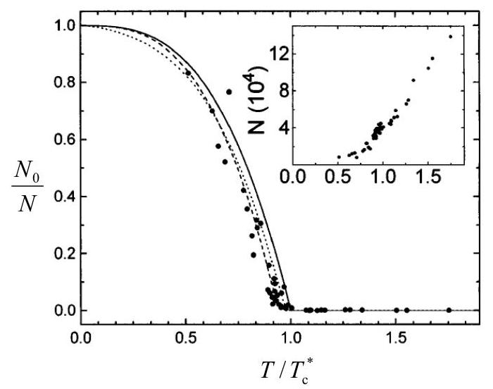

This assignment covers material in Chapter 9 of Reif. I recommend reading through the text and also Lectures Notes 34-36.
Problem 1: (BEC in a harmonic trap) In this problem, you will study the Bose-Einstein condensation (BEC) of particles in a three-dimensional harmonic trap with confining potential $U(r)=$ $m \omega^{2} r^{2} / 2$. This is the setup used in most experiments on the BEC of dilute gases of neutral (and hence very weakly interacting) atoms. For simplicity, consider spin-0 particles, so there is no spin degeneracy. (a) The quantum-mechanical analysis of a particle in the harmonic potential $U(r)$ given above yields the single-particle energy levels
$$ \varepsilon_{n_{x} n_{y} n_{z}}=\hbar \omega\left(n_{x}+n_{y}+n_{z}+3 / 2\right) $$
where each single-particle state is labeled by the triplet of integers $n_{x}, n_{y}, n_{z}$, each of which runs from 0 to $\infty$. Just as we did in class for the case of Bose-Einstein condensation of particles in a box with periodic boundary conditions (see Lecture 34), write down the expression for the particle number $N$ as a sum over single-particle states. (b) The energies in Eq. (1) depend only on the sum $n=n_{x}+n_{y}+n_{z}$, and we may therefore write $\varepsilon_{n}=\hbar \omega(n+3 / 2)$. However, each energy level is degenerate (for example, there is a unique state for $n=0$, there are 3 states giving $n=1,6$ states giving $n=2$, etc.). Find the general formula for the degeneracy factor $\rho_{n}$ for arbitrary $n$ and use this to rewrite your result in part (a) as a sum over $n$. (c) Separate out the ground state from the sum you found in part (a) (note that the ground state energy in this case is $\varepsilon_{0}=(3 / 2) \hbar \omega$ ), expressing the total particle number in the form $N=N_{\varepsilon=\varepsilon_{0}}+N_{\varepsilon>\varepsilon_{0}}$. Obtain the BEC transition temperature $T_{c}$ by setting $\mu=\varepsilon_{0}$ in $N_{\varepsilon>\varepsilon_{0}}$ and recall that, at $T=T_{c}, N_{\varepsilon>\varepsilon_{0}}=N$. Hint: When $N \gg 1$, the sum over $n$ may be replaced by an integration and, at the same level of approximation, you may replace $\rho_{n}$ by its leading term at large $n$. The following integral will be useful:
$$ \int_{0}^{\infty} \frac{x^{2}}{e^{x}-1}=2 \zeta(3) \approx 2.404 $$
(d) Show that number of particle in the condensate for $T \leq T_{c}$ obeys
$$ N_{\varepsilon=\varepsilon_{0}}=N\left[1-\left(\frac{T}{T_{c}}\right)^{3}\right] $$
Note the different power of temperature from the result derived in lecture for the BEC of particles in a box. Below is a plot of the condensate fraction $N_{0} / N$ of a BEC of $N{ }^{87} \mathrm{Rb}$ atoms, in one of the pioneering BEC experiments - see J. Ensher et. al., Phys. Rev. Lett. 77, 4984 (1996). In this experiment $T_{c}$ was as low as $0.28 \times 10^{-6} \mathrm{~K}$. The solid line shows the analytical result Eq. (3); other lines correspond to more detailed theories taking into account the finite number $N$ of trapped atoms ( $N$ is shown in the inset). 
Problem 2: (BEC in two dimensions) Calculate the chemical potential $\mu$ of an ideal Bose gas in two dimensions (2D), as a function of its areal density $n$ (the number of particles per unit area). Determine whether such gas can form a BEC at low temperatures. Hint: Use your result for the 2D density of states from Homework 10, Problem 1a.
Problem 3: (Black-body thermodynamics, adapted from Reif 9.9) Electromagnetic radiation at temperature $T_{i}$ fills a cavity of volume $V$. If the volume of the thermally insulated cavity is expanded quasi-statically to a volume $8 V$, what the final temperature $T_{f}$ ?
Problem 4: (Black-body thermodynamics, Stefan-Boltzmann law) In this problem you use thermodynamic arguments to derive that the energy $E$ of a black-body at temperature $T$ enclosed in a volume $V$ obeys the scaling relation $E \propto V T^{4}$. Take as your starting point the relation between the radiation pressure and the energy $p=E / 3 V$. (This can be derived in different ways, for example, from kinetic arguments.) (a) Explain why the relation $p=E / 3 V$ implies that the pressure is independent of volume; i.e., $p=p(T)$. (b) Using the fact that $p=p(T)$, obtain the Helmholtz free energy $F$ of the black-body. Express $F$ in terms of $E$. (c) Starting from the fundamental relation $F=E-T S$, obtain a differential equation satisfied by $F$. Solve this differential equation and show that your solution implies $E \propto V T^{4}$.
Note: The proportionality factor cannot be obtained from thermodynamic arguments alone; for that we needed statistical mechanics.
Problem 5: (Black-body radiation, adapted from Reif 9.12) It has been reported that a nuclear fission explosion produces a temperature of the order of $10^{6 \circ} \mathrm{~K}$. Assuming this to be true over a sphere 10 cm in diameter, calculate approximately the following: (a) The total rate of electromagnetic radiation from the surface of this sphere. (b) The radiation flux (power incident per unit area) at a distance of 1 km . (c) The wavelength corresponding to the maximum in the radiated power spectrum.
Problem 6: (Black-body radiation, adapted from Reif 9.13) The surface temperature of the sun is $T_{0}=5500^{\circ} \mathrm{K}$, its radius is $R=7 \times 10^{10} \mathrm{~cm}$, while the radius of the earth is $r=6.37 \times 10^{8} \mathrm{~cm}$. The mean distance between the sun and the earth is $L=1.5 \times 10^{13} \mathrm{~cm}$. In first approximation, one can assume that both the sun and the earth absorb all electromagnetic radiation incident upon them.
The earth has reached a steady state so that its mean temperature $T$ does not change in time despite the fact that the earth constantly absorbs and emits radiation. (a) Find an approximate expression for the temperature $T$ of the earth in terms of the astronomical parameters mentioned above. (b) Calculate the temperature $T$ numerically.